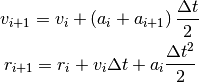
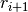
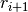
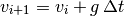

Una simulación más precisa¶
A fin de obtener una simulación más precisa es necesario utilizar un método distinto al de Euler, ya que éste acumula muchos errores a medida que transcurre el tiempo.
Uno de estos métodos se conoce como método de Verlet en las velocidades, el cual se define mediante las siguientes ecuaciones:

Al incluir tanto  como  términos adicionales,
hacen que el cómputo de estos valores sea mucho más preciso que para el
método de Euler, como lo veremos a continuación.
como  términos adicionales,
hacen que el cómputo de estos valores sea mucho más preciso que para el
método de Euler, como lo veremos a continuación.
Ejercicios¶
Programar la caída de una bola sin fricción y sin colisión inelástica, usando el método de Verlet.
Sugerencias:
Calcular primero la nueva posición y añadirla a la lista de posiciones.
No utilizar una lista de aceleraciones, ya que la aceleración es constante e igual a g.
Debido a lo anterior, la ecuación para la velocidad en el siguiente instante se reduce a:

Calcular la nueva velocidad con esta ecuación.
Realizar una gráfica de la posición vs. el tiempo, y trazar una línea horizontal a la altura de la posición inicial. Comparar esta gráfica con la que se obtuvo usando el método de Euler.
Programar la caída de la bola de la bola con fricción y colisión inelástica, y el método de Verlet.
Sugerencias:
- Calcular primero la nueva posición y añadirla a la lista de posiciones.
- Calcular la nueva aceleración y añadirla a la lista de aceleraciones. Usar la fórmula de la sección Fuerza de fricción con el aire.
- Finalmente, calcular la nueva velocidad. No olvidar generar una colisión inelástica cuando la bola chocha contra el piso.